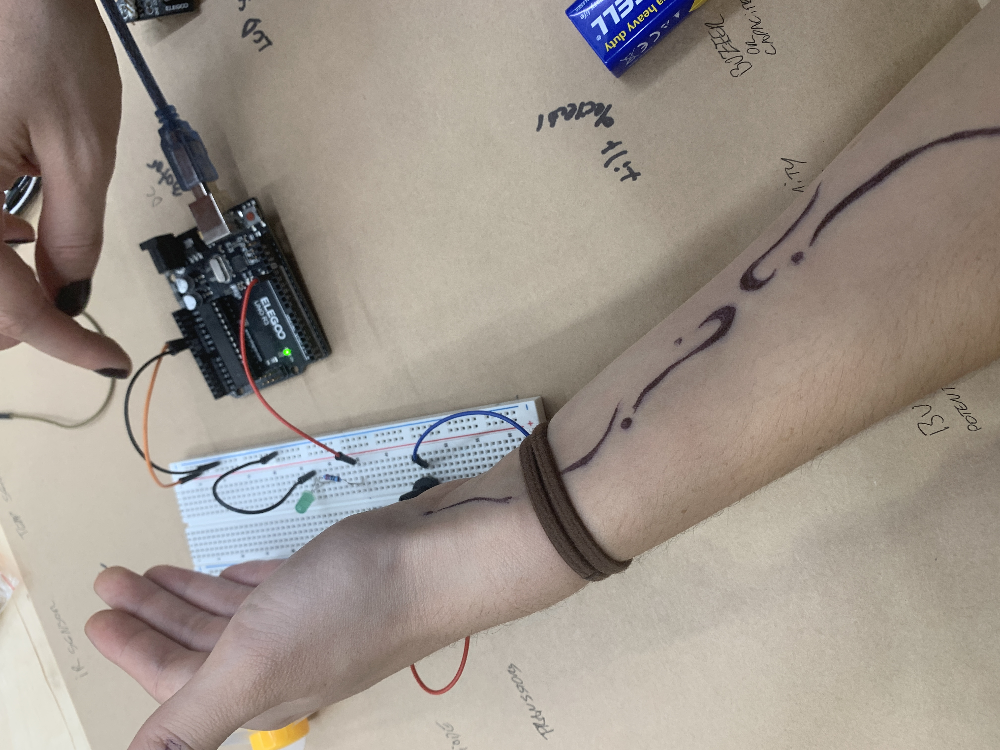
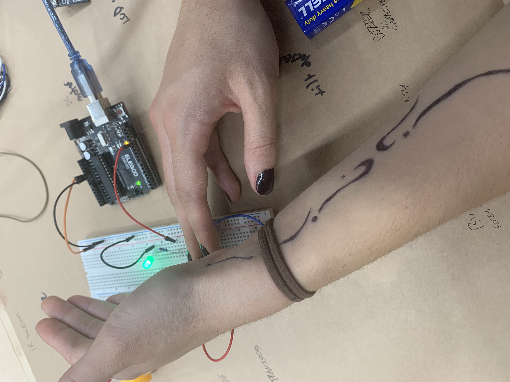

this week we were in the telstra creator space, beginning our next section on phusical computing with Arduino.
this is a simple circuit with an LED light being controlled by a potentiometer.
~
i conducted experiments throughout the next 3 weeks with user: notacat.


i have used Arduino before to create projects with my dad, but this was a few years ago. i am looking forward to delving back in and expanding my understanding of physical computing further.
//chindogu
~
an idea for a 'use'less machine
as we began looking at robots and physical computing, we spoke about the concept of chindogu. we were tasked to come up with an idea for a machine that is seemingly useless, aside from the joy of making it or the reaction it brings.